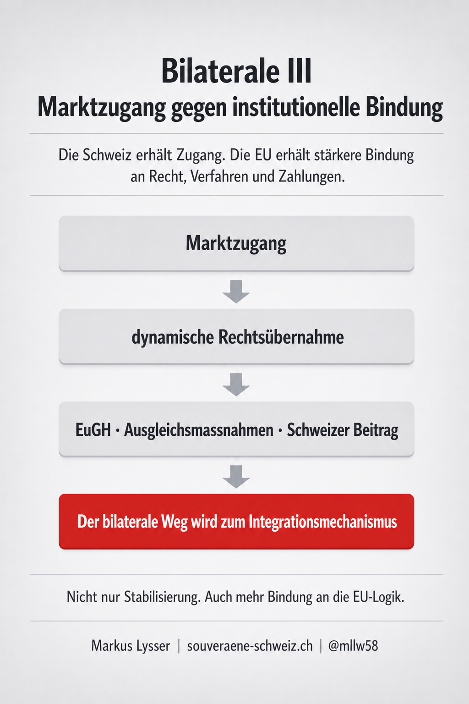
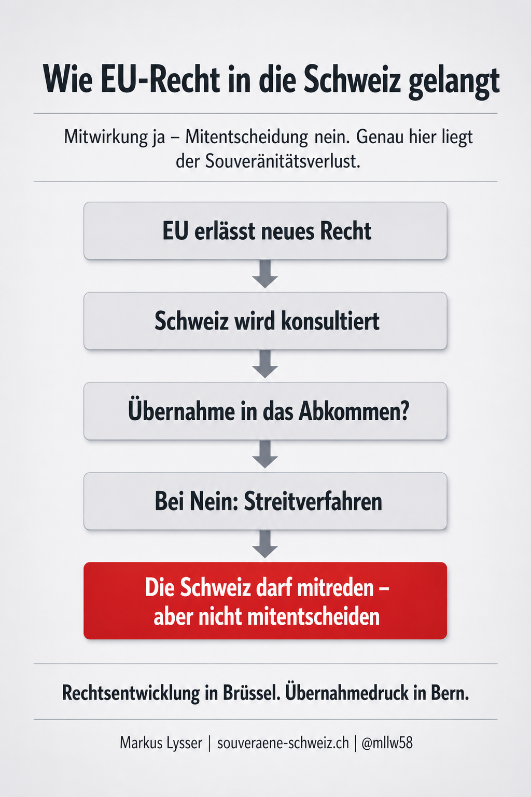
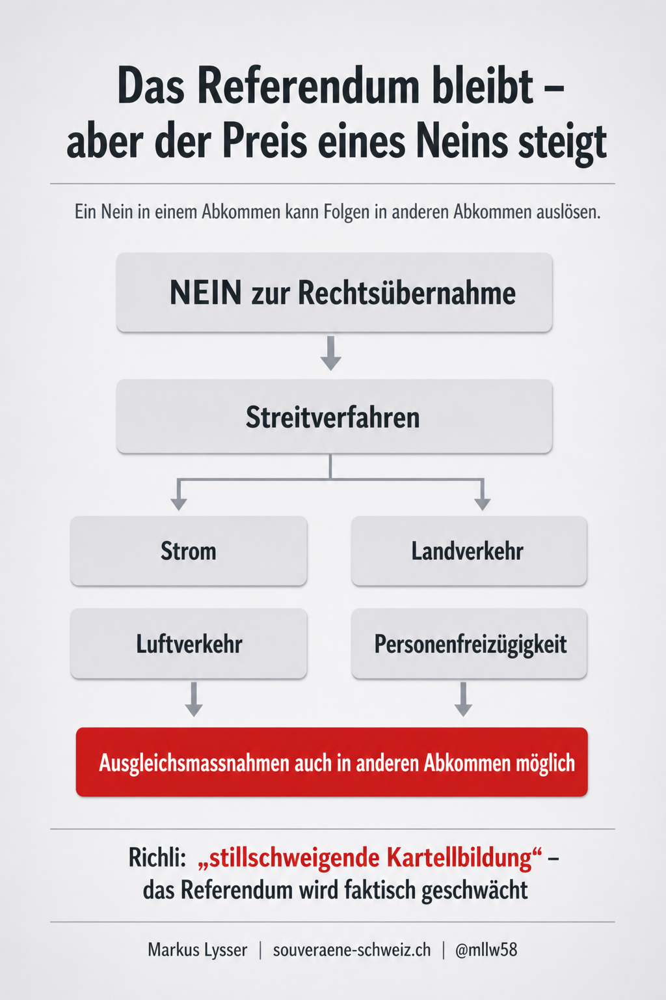
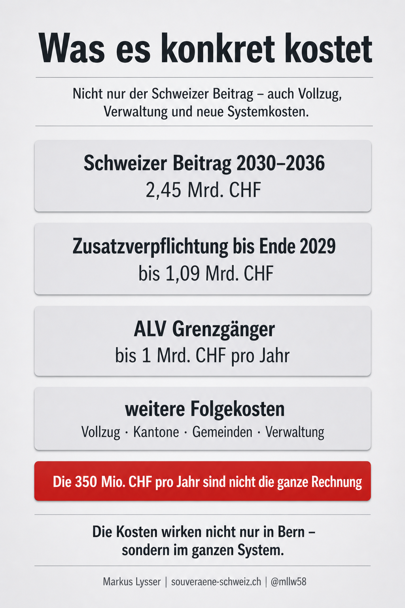

Der Bundesrat stellt das Paket Schweiz–EU als Stabilisierung des bilateralen Weges dar. Die Botschaft spricht von Marktzugang, Rechtssicherheit, Mitwirkung und Schutzmechanismen. Das klingt nach Kontinuität.
Bei genauer Betrachtung geht es aber nicht nur um die Weiterführung bestehender Verträge. Das Paket verändert das Verhältnis zwischen der Schweiz und der EU institutionell. Die Schweiz würde sich in mehreren Bereichen verpflichten, künftige EU-Rechtsentwicklungen ohne gleichberechtigte Mitentscheidung zu übernehmen, Streitigkeiten einem neuen Mechanismus zu unterstellen und bei einer Nichtübernahme mit Ausgleichsmassnahmen zu rechnen.
Der Kern ist deshalb nicht nur wirtschaftlich. Der Kern ist staatspolitisch.

Kurzfassung
Ein Beispiel: Die EU entwickelt ihr Recht im Bereich Personenfreizügigkeit weiter. Die Schweiz übernimmt diese Änderung nicht, weil ein Referendum erfolgreich ist. Daraus kann ein Streitfall entstehen. Am Ende könnten Ausgleichsmassnahmen folgen – unter Umständen nicht nur im Bereich Personenfreizügigkeit, sondern auch in einem anderen Binnenmarktabkommen, etwa beim Strom, beim Landverkehr oder bei technischen Handelshemmnissen.
Die Schweiz darf also noch Nein sagen – aber das Nein kann künftig vertraglich unvorhersehbare Folgen haben.
Besonders heikel: Ausgleichsmassnahmen können nicht nur im betroffenen Abkommen erfolgen. Sie können auch in anderen Binnenmarktabkommen ansetzen. Wenn die Schweiz also in einem Bereich eine EU-Rechtsübernahme ablehnt, kann die EU Druck an einer anderen Stelle aufbauen.
Prof. Paul Richli beschreibt diese Konstruktion sinngemäss als «stillschweigende Kartellbildung»: Das Referendum werde dadurch faktisch ausgehebelt.
1. Was der Bundesrat verspricht
Die Botschaft des Bundesrates stellt das Paket als notwendige Stabilisierung der Beziehungen zur EU dar. Im Zentrum stehen fünf Versprechen:
Erstens: stabiler Marktzugang. Die Schweiz soll in wichtigen Bereichen weiterhin am EU-Binnenmarkt teilnehmen können.
Zweitens: mehr Rechtssicherheit. Unternehmen, Behörden und die EU sollen wissen, welche Regeln gelten.
Drittens: Mitwirkung bei neuem EU-Recht. Die Schweiz soll frühzeitig in EU-Prozesse eingebunden werden.
Viertens: Schutzklauseln und Ausnahmen. Der Bundesrat verweist auf Absicherungen, insbesondere bei der Personenfreizügigkeit.
Fünftens: Fortsetzung des bilateralen Weges. Das Paket wird als Weiterentwicklung der bisherigen bilateralen Verträge verkauft.
Das ist die offizielle Erzählung. Die entscheidende Frage lautet aber: Was muss die Schweiz dafür aufgeben?
2. Was sich institutionell verändert
Das Paket führt in zentralen Abkommen institutionelle Elemente ein. Dazu gehören:
- dynamische Rechtsübernahme,
- ein neues Streitbeilegungsverfahren,
- eine Rolle des Europäischen Gerichtshofs,
- Ausgleichsmassnahmen bei Konflikten,
- eine verstetigt finanzielle Beteiligung der Schweiz.
Damit verschiebt sich der bilaterale Weg. Bisher beruhte er stärker auf einzelnen Verträgen zwischen zwei Parteien. Künftig würde er stärker zu einem dauerhaften Anpassungsmechanismus. Die Schweiz bliebe formal ausserhalb der EU, müsste aber in bestimmten Bereichen EU-Recht ohne gleichberechtigte Mitentscheidung übernehmen.
Das ist der eigentliche Systemwechsel.
3. Dynamische Rechtsübernahme: Der zentrale Souveränitätsverlust
Die dynamische Rechtsübernahme bedeutet: Wenn die EU ihr Recht in einem vom Abkommen erfassten Bereich weiterentwickelt, soll die Schweiz diese Entwicklung grundsätzlich übernehmen.
Das betrifft nicht irgendein fremdes Recht, sondern Rechtsbereiche, die in der Schweiz direkt wirken können: Personenfreizügigkeit, technische Handelshemmnisse, Landverkehr, Luftverkehr, Strom, Lebensmittelsicherheit und weitere Bereiche des Pakets.
Der Bundesrat spricht von Mitwirkung. Das klingt nach Einfluss. Der entscheidende Unterschied ist aber:
- Die Schweiz darf mitreden.
- Die EU entscheidet.
- Die Schweiz muss anschliessend übernehmen – oder sie riskiert Gegenmassnahmen.
Damit verschiebt sich die schweizerische Gesetzgebung. Nicht mehr allein Parlament, Volk und Kantone bestimmen, ob eine Regel politisch richtig ist. Vielmehr entsteht ein vertraglicher Druck, EU-Recht zu übernehmen, weil eine Ablehnung Kosten auslösen kann.
Das ist kein EU-Beitritt. Aber es ist auch keine klassische souveräne Vertragsbeziehung mehr.

4. Schiedsgericht und EuGH: Wer entscheidet am Ende?
Der Bundesrat betont, dass Streitigkeiten nicht direkt dem Europäischen Gerichtshof unterstellt werden, sondern einem Schiedsgericht. Das ist formal richtig.
Aber bei Fragen zur Auslegung von EU-Recht kommt der EuGH ins Spiel. Und genau dort liegt der Knackpunkt: In den betroffenen Abkommen geht es häufig gerade um EU-Recht oder um Rechtsakte, die aus dem EU-Recht stammen.
Das Schiedsgericht ist also nicht frei, EU-Recht schweizerisch auszulegen. Wenn eine Frage des EU-Rechts entscheidend ist, wird der EuGH beigezogen. Seine Auslegung ist für diese EU-rechtliche Frage massgebend.
Praktisch bedeutet das:
- Die Schweiz erhält ein Schiedsgericht.
- Die EU behält die Deutungshoheit über ihr Recht.
- Und die Schweiz verpflichtet sich, dieses Recht in den betroffenen Bereichen zu beachten.
Das ist aus EU-Sicht logisch. Aus Schweizer Sicht ist es politisch brisant. Denn damit wird ein ausländisches Gericht indirekt Teil der rechtlichen Ordnung, welche die Schweiz in den betroffenen Abkommen anwenden muss.
5. Direkte Demokratie: Formal erhalten, faktisch geschwächt
Der Bundesrat schreibt, Initiativen und Referenden blieben vollständig gewährleistet. Formal stimmt das.
Die Schweizerinnen und Schweizer können weiterhin abstimmen. Das Parlament kann weiterhin Gesetze beschliessen oder ablehnen. Ein Referendum gegen eine Rechtsübernahme bleibt möglich. Aber die politische Wirkung eines Neins verändert sich.
Wenn die Schweiz eine relevante EU-Rechtsentwicklung nicht übernimmt, kann dies zu einem Streitfall führen. Am Ende können Ausgleichsmassnahmen stehen. Damit wird aus einem demokratischen Entscheid ein vertragliches Risiko.
Die Schweiz darf noch Nein sagen – aber das Nein kann künftig vertraglich unvorhersehbare Folgen haben.
Besonders problematisch ist, dass solche Ausgleichsmassnahmen nicht zwingend dort erfolgen müssen, wo der Konflikt entstanden ist. Sie können auch in einem anderen vom Paket erfassten Abkommen ansetzen.
Das ist der entscheidende Punkt. Ein Nein des Schweizer Volkes in einem Bereich kann Druck in einem anderen Bereich auslösen.
Genau deshalb spricht Prof. Paul Richli sinngemäss von einer stillschweigenden Kartellbildung: Die Abkommen werden so miteinander verknüpft, dass ein demokratisches Nein nicht mehr einfach ein Nein bleibt, sondern Folgekosten im gesamten Vertragsgefüge auslösen kann.
Damit bleibt das Referendum auf dem Papier bestehen. Politisch wird es aber belastet.

6. Schutzklauseln: Kein freier Notausgang
Der Bundesrat verweist bei der Personenfreizügigkeit auf Schutzklauseln. Solche Klauseln können politisch wichtig sein. Sie klingen nach Sicherheit: Wenn etwas aus dem Ruder läuft, kann die Schweiz reagieren.
Aber Schutzklauseln sind keine einseitige Selbstbestimmung. Sie müssen begründet werden. Sie müssen vertraglich haltbar sein. Sie können bestritten werden. Und sie stehen im politischen Verhältnis zur EU.
Der praktische Punkt ist einfach: Eine echte souveräne Steuerung heisst: Die Schweiz entscheidet selbst. Eine Schutzklausel im EU-Vertragsrahmen heisst: Die Schweiz muss ihre Abweichung rechtfertigen. Ob diese Rechtfertigung genügt, kann bestritten werden. Damit wird die politische Steuerung der Zuwanderung nicht frei in die Schweiz zurückgeholt, sondern in ein Verfahren mit EU-Gegenrechten eingebettet.
Das wurde auch in der öffentlichen Debatte sichtbar: Vertreter der EU und einzelner EU-Staaten machten wiederholt klar, dass die Personenfreizügigkeit ein Kernstück des Binnenmarktzugangs ist. Eine Schutzklausel ist deshalb kein Instrument, mit dem die Schweiz beliebig die Zuwanderung steuern kann.
7. Was es konkret kostet
Die Kosten des Pakets bestehen nicht nur aus einem einzelnen Zahlungsbetrag. Sie setzen sich aus mehreren Ebenen zusammen: direkte Beiträge an die EU, Übergangsverpflichtungen, Vollzugskosten, Verwaltungskosten und mögliche sektorielle Folgekosten.
Schweizer Beitrag
Der Schweizer Beitrag an die EU wird verstetigt. Für die erste Beitragsperiode 2030–2036 sind jährlich 350 Millionen Franken vorgesehen. Das ergibt 2,45 Milliarden Franken über sieben Jahre. Damit wird aus einem politisch jeweils neu verhandelten Beitrag ein dauerhafter Mechanismus. Die Schweiz würde sich nicht mehr nur punktuell beteiligen, sondern regelmässig und planbarer in die Finanzierungslogik der EU eingebunden.
Übergangsverpflichtung bis Ende 2029
Dazu kommt eine Übergangsverpflichtung für die Jahre 2025–2029. Bis zum Inkrafttreten des Stabilisierungsteils sind jährlich 130 Millionen Franken vorgesehen. Ab Inkrafttreten des Stabilisierungsteils steigt der Betrag auf 350 Millionen Franken pro Jahr bis Ende 2029.
Bei einem Inkrafttreten Anfang 2028 ergibt sich daraus folgende Rechnung:
- 2025–2027: 3 × 130 Millionen Franken = 390 Millionen Franken
- 2028–2029: 2 × 350 Millionen Franken = 700 Millionen Franken
- Total: 1,09 Milliarden Franken
Diese Übergangsverpflichtung kommt zusätzlich zur späteren Beitragsperiode 2030–2036 hinzu.
Versteckte und indirekte Kosten
Neben den offiziellen Beiträgen entstehen weitere Kosten. Sie erscheinen nicht immer als direkte Zahlung an die EU, können für die Schweiz aber trotzdem erheblich sein. Dazu gehören insbesondere:
- zusätzlicher Vollzug bei Bund, Kantonen und Gemeinden,
- neue Kontroll-, Melde- und Verwaltungsverfahren,
- Anpassungskosten in einzelnen Sektoren,
- höhere Regulierungskosten für Unternehmen,
- zusätzliche Belastungen im Sozialversicherungsbereich,
- Kosten durch neue oder übernommene EU-Rechtsakte.
In der Analyse zum Schweizer Beitrag werden diese potenziellen Zusatzkosten in drei Szenarien eingeordnet. Je nach Annahme ergeben sich versteckte Kosten von rund 2,36 Milliarden bis 6,67 Milliarden Franken pro Jahr. Zusammen mit dem fixen Schweizer Beitrag von 350 Millionen Franken pro Jahr ergibt sich eine mögliche wiederkehrende Gesamtbelastung von rund 2,71 Milliarden bis 7,02 Milliarden Franken pro Jahr.
Die genaue Höhe hängt davon ab, welche Rechtsentwicklungen tatsächlich übernommen werden, wie stark der Vollzug ausgebaut werden muss und welche Folgekosten in einzelnen Dossiers entstehen. Entscheidend ist aber: Der offizielle Betrag von 350 Millionen Franken pro Jahr bildet nicht die ganze finanzielle Wirkung des Pakets ab.
Arbeitslosenversicherung für Grenzgänger
Ein besonders sensibles Beispiel ist die Arbeitslosenversicherung für Grenzgänger. Heute ist das System für die Schweiz vergleichsweise günstig: Bei arbeitslosen Grenzgängern erstattet sie dem Wohnstaat in der Regel nur während einer begrenzten Zeit Leistungen. Die EU bewegt sich nun in Richtung Arbeitslandprinzip. Das würde bedeuten: Das Land, in dem gearbeitet und Beiträge bezahlt wurden, müsste stärker für Arbeitslosenleistungen aufkommen. Die NZZ nannte als mögliche Grössenordnung bis zu eine Milliarde Franken pro Jahr.

8. Was die EU gewinnt
Aus Sicht der EU ist das Paket sehr attraktiv. Die EU erhält nicht einfach stabilere Beziehungen zur Schweiz – sie erhält vor allem einen Mechanismus, der die Schweiz berechenbarer macht.
Die wichtigsten Vorteile für die EU sind:
Erstens: Regelangleichung. Die Schweiz wird in ausgewählten Binnenmarktbereichen stärker an EU-Recht gebunden.
Zweitens: institutionelle Kontrolle. Streitigkeiten werden nicht mehr rein politisch ausgehandelt, sondern in ein geregeltes Verfahren mit EuGH-Bezug überführt.
Drittens: finanzielle Beiträge. Der Schweizer Beitrag wird verstetigt und planbarer.
Viertens: weniger Sonderfall Schweiz. Die EU reduziert das Risiko, dass die Schweiz Marktzugang beansprucht, aber sich künftigen Rechtsentwicklungen entzieht.
Fünftens: politischer Hebel. Durch Ausgleichsmassnahmen erhält die EU ein Druckmittel, wenn die Schweiz EU-Recht nicht übernimmt.
Das ist aus EU-Sicht konsequent. Aus Schweizer Sicht ist es der Preis für den institutionell abgesicherten Marktzugang.
9. Was für die Schweiz offen bleibt
Die Botschaft des Bundesrates beantwortet nicht alle entscheidenden Fragen. Offen bleibt insbesondere:
Wie wirksam sind die Schutzklauseln wirklich? Ob sie im Ernstfall politisch und rechtlich durchsetzbar sind, zeigt sich erst bei ihrer Anwendung.
Wie weit entwickelt sich das EU-Recht künftig? Die Schweiz verpflichtet sich nicht nur gegenüber dem heutigen Rechtsbestand, sondern auch gegenüber künftigen Entwicklungen in erfassten Bereichen.
Wie stark werden Ausgleichsmassnahmen politisch wirken? Wenn ein Nein zu EU-Recht in einem Bereich Nachteile in einem anderen Bereich auslösen kann, verändert das die demokratische Ausgangslage.
Welche Kosten entstehen bei Kantonen und Gemeinden? Viele Vollzugs- und Kontrollaufgaben werden nicht nur in Bern anfallen. Die föderale Ebene wird stärker belastet.
Wie gross wird die finanzielle Dynamik? Der Schweizer Beitrag ist bezifferbar. Viele Folgekosten sind es noch nicht. Die Analyse zum Schweizer Beitrag zeigt jedoch, dass die mögliche wiederkehrende Gesamtbelastung deutlich über dem offiziell sichtbaren Betrag liegen kann.
Ja, das Paket soll Marktzugang sichern und die Beziehungen zur EU berechenbarer machen. Aber es tut dies zu einem hohen institutionellen und finanziellen Preis.
Die Schweiz würde in mehreren Bereichen verpflichtet, künftiges EU-Recht grundsätzlich zu übernehmen. Bei Streitigkeiten erhält der EuGH dort Gewicht, wo EU-Recht auszulegen ist. Bei einer Nichtübernahme drohen Ausgleichsmassnahmen, die auch andere Abkommen treffen können. Die direkte Demokratie bleibt formal bestehen, wird aber politisch unter Druck gesetzt.
Hinzu kommt die finanzielle Dimension. Offiziell sichtbar sind der Schweizer Beitrag von 350 Millionen Franken pro Jahr, die Beitragsperiode 2030–2036 mit 2,45 Milliarden Franken sowie eine mögliche Übergangsverpflichtung von bis zu 1,09 Milliarden Franken bis Ende 2029. Doch die eigentliche Belastung kann deutlich höher liegen: Werden Vollzug, Verwaltung, sektorielle Anpassungen, Sozialversicherungsrisiken und weitere Folgekosten einbezogen, zeigt die Analyse zum Schweizer Beitrag eine mögliche wiederkehrende Gesamtbelastung von rund 2,71 Milliarden bis 7,02 Milliarden Franken pro Jahr.
Der entscheidende Satz lautet deshalb:
Die Schweiz bleibt ausserhalb der EU – übernimmt aber in zentralen Bereichen zunehmend die Logik des EU-Binnenmarkts.
Für die EU bedeutet das mehr Berechenbarkeit, mehr Kontrolle und eine engere Einbindung der Schweiz. Für die Schweiz bedeutet es: weniger eigenständiger Handlungsspielraum, höhere politische Folgekosten eines Neins und neue finanzielle Verpflichtungen.
Das ist der eigentliche Kern der Vorlage.
Detailanalyse
Quellen und Vertiefung
- Botschaft des Bundesrates zum Paket Schweiz–EU – EDA/Bundesrat, 13. Juni 2025
eda.admin.ch – Paket CH–EU - Erläuternder Bericht zum Paket Schweiz–EU – EDA/Bundesrat, 13. Juni 2025. Der Bericht hält fest, dass die verfassungsmässigen Rechte formal bestehen bleiben und dass die institutionellen Elemente die bestehenden und neuen Binnenmarktabkommen erfassen.
eda.admin.ch – Erläuternder Bericht - Analyse: Personenfreizügigkeit – Souveräne Schweiz
Personenfreizügigkeit → - Analyse: Schweizer Beitrag – Souveräne Schweiz
Schweizer Beitrag → - Analyse: Landverkehrsabkommen – Souveräne Schweiz
Landverkehr → - Rechtsgutachten Richli – Zusammenfassung – Souveräne Schweiz
Richli-Gutachten → - SPK-S: Verfassungsabstimmung über das EU-Paket – Souveräne Schweiz
SPK-S Analyse →